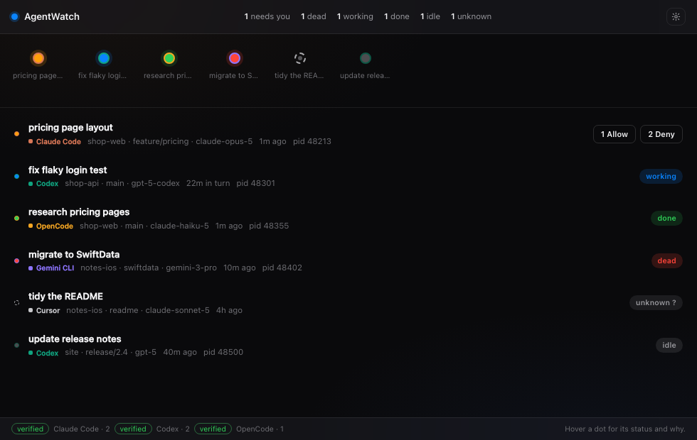
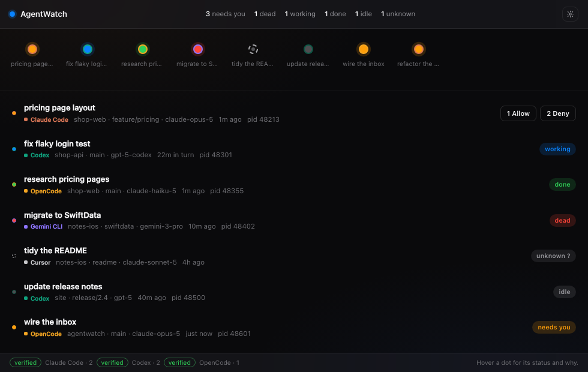
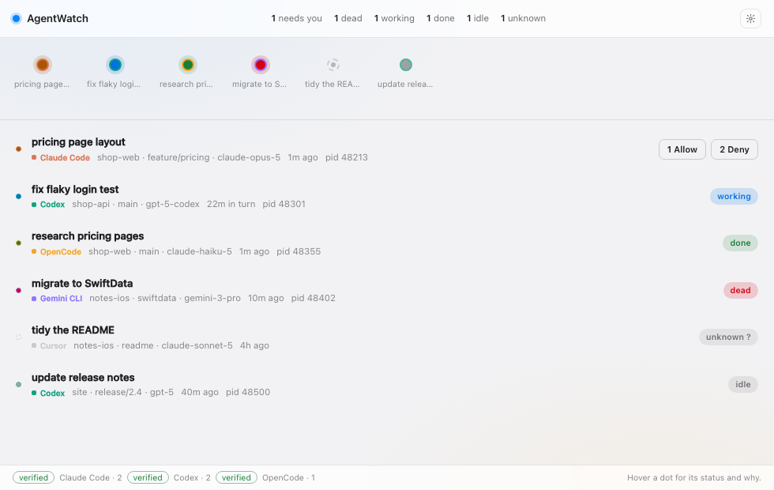
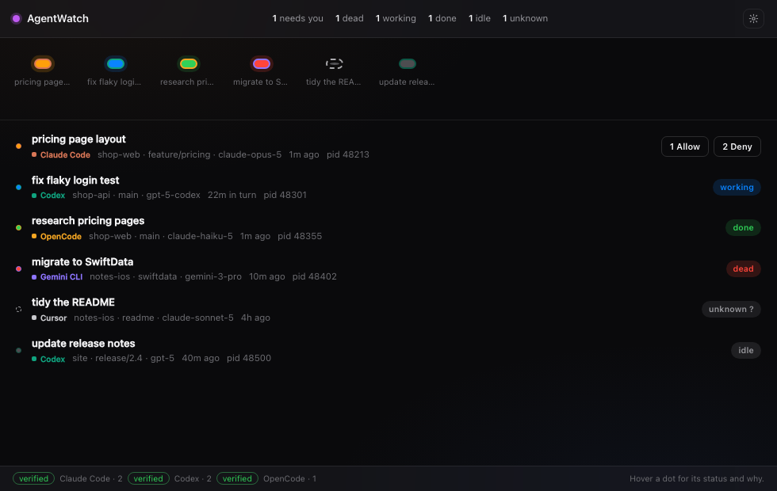
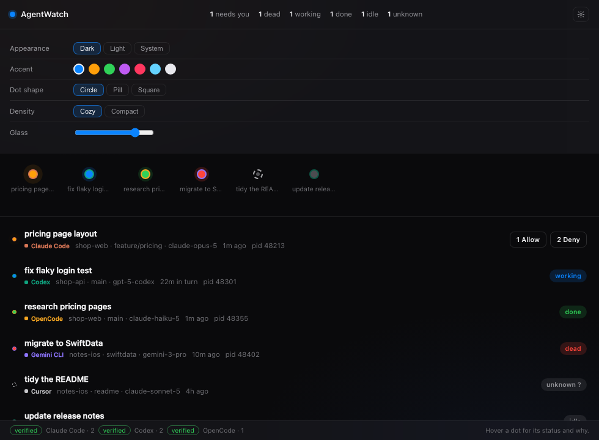
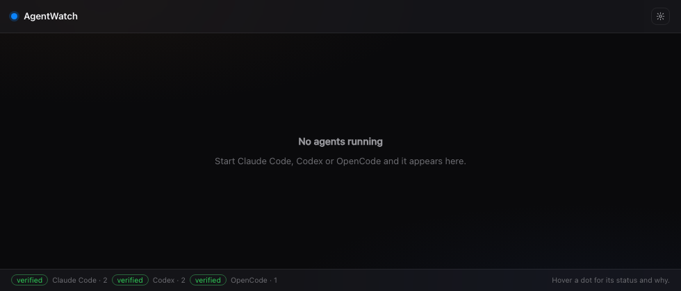

The real frontend, rendered headless. Not mockups.

1 · The board
One dot per agent, most urgent first. Ring = vendor (Claude clay, Codex teal, OpenCode amber, Gemini violet, Cursor grey). Fill = status (blue working, amber needs you, green done, red dead, dashed unknown).

2 · Answering
Three sessions need attention. Only the Claude Code row offers 1 Allow / 2 Deny — OpenCode has no hook, so its amber row can be seen but not answered. The limitation is shown, not hidden.

3 · Light appearance
Status colours switch to Apple's light system colours. #0a84ff on white is ~2.1:1 contrast, so light mode uses #0071e3, #a85600, #1a7f37, #d70015.

4 · Compact + pill + purple
Same data, shape=pill, density=compact, accent=#bf5af2. One attribute each; no layout is duplicated per theme.

5 · Appearance drawer
Five controls, live preview, no Apply button.

6 · Empty
No agents: the strip collapses and the board says what to start. An idle app should look calm, not broken.